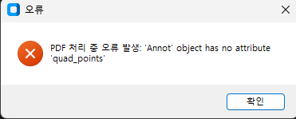
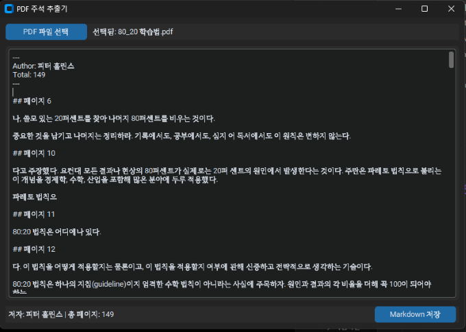
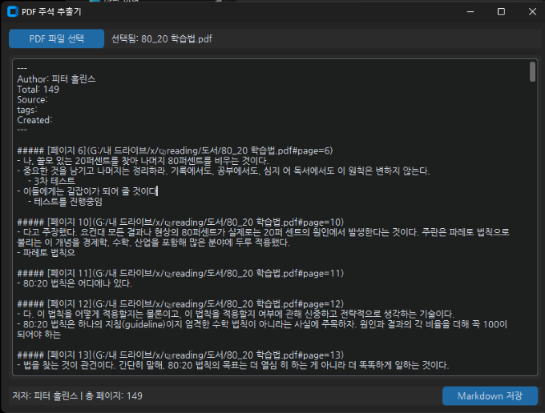

기간
- 개인 프로젝트
- 2025.04 ~ 2025.04
목표
- 개인적으로 구매한 대부분의 도서 파일을 PDF로 보관하고 PDF를 통해서 책을 읽음
- PDF에 하이라이트를 모아서 메모로 정리하는데 직접 옮기는 것은 시간이 많이 걸림
- Readwise 서비스 처럼 읽은 책의 highlight를 노트로 바로 내보내는 프로그램 구현
- PDF 파일에서 하이라이트를 추출하는 프로그램 제작
- 추출한 하이라이트를
.md형식으로 저장하여 옵시디언에서 활용 - 하이라이트가 있는 페이지를 바로 볼 수 있도록 pdf 링크를 생성
성과
- PDF에서 하이라이트를 추출해서
.md로 저장하는 프로그램 구현 - Vibe Coding을 이용해서 제작함
- Vibe Coding으로 개발하는 방법을 습득
- 프로젝트 소스 : GITHUB
과정
프롬프트로 기본 코드 구현
- Gemini 2.5 Pro (experimental)에서 Canvas 기능을 이용
- 아래와 같은 프롬프트로 1차 생성
pdf에서 하이라이트, 밑줄, 메모등을 추출해서 gui로 보여주는 프로그램을 작성해줘. 이렇게 추출된 내용은 편집할 수 있도록 구현해줘. 파일을 선택할 수 있는 gui와 md파일로 저장하는 기능을 구현해줘. 하이라이트와 연관된 메모는 bullet list로 하이라이트 바로 아래에 표시되도록 해줘. 하이라이트와 밑줄은 적용된 텍스트가 나오게 해줘. obsidian에서 활용 가능하도록 obsidian 속성으로 저자(Author)와 총페이지수(Total)을 표시해줘.
오류 고치기
- 생성된 코드를 실행 후 PDF 추출을 시도해보니 아래의 오류가 발생함

- quad_points 속성이 없는 pdf도 있어서 발생한 문제. 해당 케이스를 제외하도록 소스에 추가하면 간단하지만 이 오류 수정을 AI에 맡겨봄
'Annot' object has no attribute 'quad_points'라는 오류가 발생하는데 이 문제를 해결해줘
- 오류가 수정되어 정상적으로 추출됨을 확인

수정하기
- 출력되는 형식은 직접 수정하기로 결정
- 프롬프트로 코드 수정을 요청하면 전체를 재작성하기 때문에 시간이 많이 소요됨
- 원하는 형태로 만들때까지 여러번 반복이 필요한데 직접 수정하는 것보다 더 긴 시간이 소요될 수 있음
- 최종적으로 아래와 같이 수정
- 폰트를 '나눔고딕'으로 변경
- 원본 하이라이트로 바로 갈 수 있도록 PDF 링크를 추가
- 내용을 bullet list로 표시하도록 변경
- 하이라이트에 추가한 메모를 보이도록 수정

정리
- 이 프로젝트를 진행하는데 프롬프팅 30분 + 직접 수정 2시간 정도가 소요
- 큰 프로젝트에서는 사용에 많은 주의가 필요해 보임
- 큰 프로젝트에서는 context length 제한때문에 전체 소스를 넣기 어려움
- 코드를 다시 작성하기 때문에 다른 부분들과 연결된 코드는 문제가 생길수 있음
- 세부적인 디테일을 구현하기 위해 "프롬프트 수정 > 결과 확인"을 반복해야함
- 프롬프트 수정시 앞서 잘 되거나 마음에 들었던 구현이 안나올수 있음
- 프롬프트를 수정해서 결과를 보는 것 보다 직접 수정하는 것이 훨씬 빠를수 있음
- 프롬프트를 수정할지 직접 수정할지 판단이 필요함
- 기능을 추가 및 변경할때 이전 프롬프트도 계속 유지해야함
- 소스와 prompt의 버전관리가 필요할 수도 있을것 같음
- 현재는 이미지/영상 분야와 비슷한 방식으로 활용되는 것 같다
- 프롬프트 돌려서 괜찮아 보이는 결과물을 뽑은다음 세부 디테일을 수정해서 활용